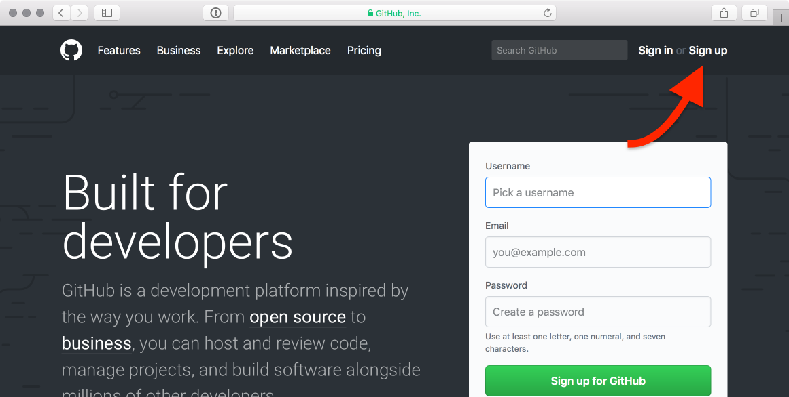

Exercise 1¶
Note
Please complete this exercise by 09:00 Wednesday, 11 September 2019.
The exercise for this week has two parts. In the first part, you will create an account on GitHub.com, and share your username with us via Slack. In the second part, you will cook up some python using the skills you learned during the first lesson!
Part 1 - Creating a GitHub.com account and using Slack¶
Open a web browser and navigate to https://www.github.com.
On the GitHub.com home page, click on Sign up on the top right.
The GitHub.com homepage
Enter a username, email address, and password. Click Create an account.
When prompted to select a plan, choose the free option. We will provide private repositories through the course GitHub organization account.
Once you have a GitHub account, go to Slack and post a message in the #week-1 channel with your full name, GitHub username and which course are you taking.
{kind=link}
For example, Dave Whipp, davewhipp, Geo-Python or Henrikki Tenkanen, HTenkanen, AutoGIS. This will help us know you were able to create your account, that you have also figured out how to use Slack, and we’ll know who is who on GitHub :).
We have sent an invite link to Slack to all registered participants before the first lesson.
Part 2 - Cooking up some Python¶
Time to start coding!
Get the recipe by accepting our first GitHub Classroom for the Exercise 1 (click the link).
After accepting the assignment, you are directed to your personal Exercise 1 repository (for example: Exercise-1-VuokkoH), which is a private version of the exercise only visible to you and the course instructors. This repository contains the instructions for doing the coding parts of Exercise 1.
Launch a new JupyterLab instance from the launch button above - we do the cooking in there
You can use either binder or CSC Notebooks. Just remember to save your work!
Download your solution, and upload it to GitHub.com into your personal Exercise-1 repository.
This week, we upload the exercise manually to GitHub. Next week, you will learn how to pull and push the exercises directly from GitHub to Jupyter Lab using Git!
Note
Each week, you will create a personal copy of the exercise repository on GitHub.com by clicking on the GitHub classroom link. Here is again the link for the programming part of Exercise 1: https://classroom.github.com/a/n-QT5uIP
You can also take a look at the template repository on GitHub: https://github.com/geo-python-2019/Exercise-1 Note that you are only able to make changes in your personal repository generated via GitHub Classroom.
Summary (what to submit)¶
- Post a message in the #week-1 channel at geopython2019.slack.com with your name, GitHub username and course.
- Accept Exercise-1 in Github classroom and upload the jupyter notebook containing the solutions for Part 2.
We ask that you complete this exercise by 09:00 next Wednesday, 11 September 2019.
Note
In case you’re curious, we need your GitHub user name in order to access your exercise repositories in GitHub for grading and feedback. The private exercise repositories are visible only to you, and the course instructors.
Warning
Please note that we provide assignment feedback only for students enrolled in the course at the University of Helsinki.